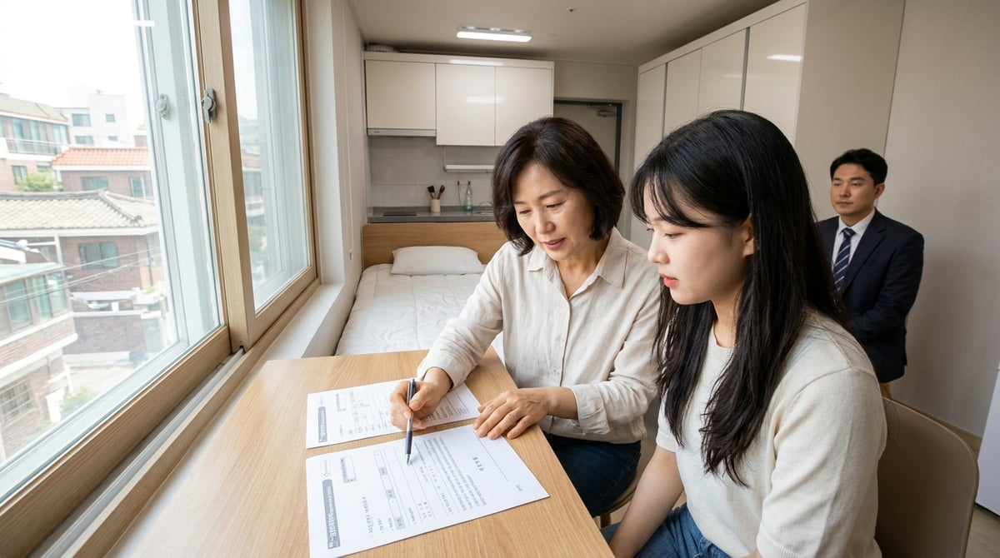

매년 6월 초~중순, 서울대학교 기숙사 선발 결과가 발표되면 관악구·낙성대역 부동산 시장에 「급구 수요」가 한꺼번에 몰립니다. 신입생·재학생·대학원생·계절학기 수강생까지 — 기숙사에 들어가지 못한 학생과 학부모님이 「이번 주 안에 집을 구해야 한다」는 상황에 놓이기 때문입니다.
낙성대역 5번 출구 도보 1분, 프라임에셋부동산이 2026년 6월 11일 기준 현장에서 확인한 최신 시세와, 기숙사 탈락 직후 48시간 안에 해야 할 일을 정리했습니다. 급할수록 실수하기 쉬운 계약·보증금 리스크도 함께 다룹니다.
- 6월 기숙사 발표 후 관악구 매물이 빨리 줄어드는 이유
- 탈락 직후 48시간 액션플랜 (예산·지역·계약 순서)
- 낙성대역·봉천동·신림동 6월 11일 기준 최신 시세
- 학생·학부모가 꼭 피해야 할 계약 실수 5가지
- 전세 vs 월세 — 학생에게 맞는 선택 기준
1. 왜 6월 11일 전후가 「자취방 전쟁」의 절정인가?
서울대 기숙사는 매년 지원자가 공급을 크게 초과합니다. 2026년에도 관악·낙성대·봉천 일대 원룸·투룸 수요는 6월 중순에 최고조에 달합니다.
- 기숙사 미선발 즉시 수요: 결과 확인 후 1~2주 내 입주 희망
- 여름 계절학기·인턴: 6월 말~7월 초 입주 수요 추가
- 2학기 개강 대비: 8월 말 입주를 노린 선계약 경쟁
- 6월 이사·갱신 시즌 겹침: 일반 임차 수요와 학생 수요 동시 발생 (6월 이사·갱신 가이드 참고)
특히 낙성대역 도보 10분 이내·풀옵션 원룸은 발표 후 3~5일 안에 계약되는 경우가 많습니다. 「조금 더 알아보자」고 미루면 선택지가 급격히 줄어듭니다.
2. 기숙사 탈락 후 48시간 액션플랜
급구 상황에서도 순서를 지키면 시간을 절약하고 사기·분쟁을 줄일 수 있습니다.
Day 1 — 오늘 (결과 확인 당일)
- 입주 희망일 확정: 계절학기 시작일·개강일 기준으로 역산
- 예산 범위 정하기: 보증금 상한, 월세 상한, 관리비 포함 총비용
- 통학 우선순위: 낙성대역(2호선) vs 봉천역 vs 신림역 — 도보·버스 시간 비교
- 카톡·전화 상담: 조건(예산·입주일·반려동물·주차)을 한 번에 전달
Day 2 — 내일 (현장 방문)
- 후보 3~5곳 방문: 낮·밤 소음, 화장실·샤워실, 누수·곰팡이 확인
- 등기부등본·건축물대장 사전 요청 (집주인 부채·위반건축물)
- 전세보증보험 사전 심사 (전세·반전세 선택 시)

Day 3 — 모레 (계약·행정)
- 계약서·특약 확인 후 잔금·입주
- 전입신고 + 확정일자 당일 처리
- 인터넷·가스·전기 명의 이전 또는 개통 예약
3. 2026년 6월 11일 기준 — 낙성대·봉천·신림 최신 시세
아래는 프라임에셋부동산이 2026년 6월 4일~11일 관악구 현장 매물·최근 계약 사례를 바탕으로 정리한 참고 범위입니다. 6월 중순 급구 수요로 역세권은 상단 시세에 거래되는 경우가 많습니다.
| 지역·유형 | 보증금 | 월세 | 전세 (참고) | 서울대 통학 |
|---|---|---|---|---|
| 낙성대역 원룸 | 500~1,000만 원 | 48~75만 원 | 5,800~9,200만 원 | 셔틀·버스 10~20분 |
| 봉천동 원룸 | 300~900만 원 | 42~68만 원 | 5,200~8,500만 원 | 도보·버스 15~25분 |
| 낙성대·봉천 투룸 | 1,000~3,000만 원 | 70~102만 원 | 1억 4,500만~2억 200만 원 | 2인·졸업생 선호 |
| 신림역 원룸 | 500~1,200만 원 | 50~78만 원 | 6,000~9,800만 원 | 2호선·버스 환승 |
※ 시세는 건물 연식·옵션·역 거리에 따라 달라집니다. 6월 급구 시즌에는 표 상단에 가까운 조건으로 빠르게 계약되는 경우가 많습니다.
학생 예산별 현실적인 선택
- 월 총비용 70만 원 이하: 봉천동 역 도보 8~12분, 반전세·월세 위주
- 월 총비용 70~90만 원: 낙성대역 도보 5~10분 원룸, 풀옵션 일부 가능
- 보증금 1억 이상 가능: 전세 검토 — 단, 보증보험 필수 확인
4. 전세 vs 월세 — 기숙사 탈락생에게 맞는 선택
| 구분 | 전세 | 월세·반전세 |
|---|---|---|
| 초기 비용 | 높음 (수천만~1억+) | 낮음 (보증금 300~1,000만 원) |
| 월 부담 | 관리비 위주 | 월세+관리비 매월 발생 |
| 1~2년 거주 | 총비용 유리한 경우 多 | 단기·유동성 유리 |
| 급구 시즌 | 매물 적음, 보험 심사 필요 | 선택지 넓음, 계약 빠름 |
기숙사 탈락 후 2주 안에 입주해야 한다면, 월세·반전세가 현실적인 경우가 많습니다. 1년 이상 거주 확정이고 보증금 여유가 있다면 전세도 검토하되, 전세보증보험 가입 가능 여부를 반드시 먼저 확인하세요.
5. 급할수록 위험 — 학생·학부모가 피해야 할 실수 5가지
- 사진만 보고 계약: 반지하·옥탑·골목 끝 건물은 야간 직접 방문 필수
- 전세보증보험 생략: 「보험 안 되는 전세」는 보증금 회수 리스크 급증
- 등기부 미확인: 근저당·가압류·신탁 등기 여부 — 잔금 당일 최신본
- 口頭 約定만 믿기: 수리 범위·에어컨·인터넷·주차는 계약서 특약에 명시
- 중개수수료·계약금 사기: 공인중개사 사무소·등록번호 확인, 이상하게 싼 매물은 의심
6. 통학 동네 비교 — 낙성대 vs 봉천 vs 신림
- 낙성대역: 서울대 셔틀·버스 접근 최우수. 매물 경쟁 가장 치열. 카페·편의시설 풍부.
- 봉천동: 예산 대비 넓은 평수·조용한 주거 분위기. 역 도보 trade-off로 월세↓.
- 신림역: 2호선·신림선 환승. 상권 발달, 야간 귀가 시 인파 많아 상대적 안전감.
처음 자취를 준비한다면 서울대 신입생 자취방 가이드도 함께 참고하세요. 6월 일반 이사 수요와 겹치는 시기라 6월 이사·갱신 가이드의 체크리스트도 유용합니다.
자주 묻는 질문 (FAQ)
Q. 기숙사 재신청·대기자 명단이 있나요?
학기·기숙사별로 상이합니다. 서울대 포털·기숙사 사무실 공지를 확인하되, 대기만 믿고 자취방 탐색을 미루지 마세요. 대기 탈락 시 7~8월에는 선택지가 더 줄어듭니다.
Q. 2인실·쉐어하우스도 괜찮을까요?
예산 절감에 효과적이나, 계약서 명의·보증금 반환 주체를 반드시 확인하세요. 불법 쪼개기·二重계약 리스크가 있는 곳은 피하는 것이 좋습니다.
Q. 부모님이 멀리 계신데 대리 계약이 가능한가요?
위임장·인감증명 등 요건이 필요할 수 있습니다. 영상 통화로 현장을 함께 보고, 등기·보험·계약서는 부모님이 직접 검토한 뒤 진행하는 것을 권합니다.
Q. 프라임에셋부동산에서 당일 상담·방문이 가능한가요?
네. 기숙사 탈락 급구 상담을 매일 받고 있습니다. 카카오채널로 예산·입주일·통학 방식(셔틀/버스)을 보내주시면 맞춤 매물을 바로 안내해 드립니다.
기숙사 탈락, 오늘부터 움직이세요
6월 중순은 관악구 매물이 가장 빠르게 줄어드는 시기입니다.
낙성대역 최신 매물·시세·계약 체크리스트를 프라임에셋부동산에서 무료로 안내해 드립니다.
낙성대역 5번 출구 도보 1분 | 매일 10:00~19:00